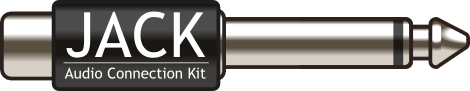
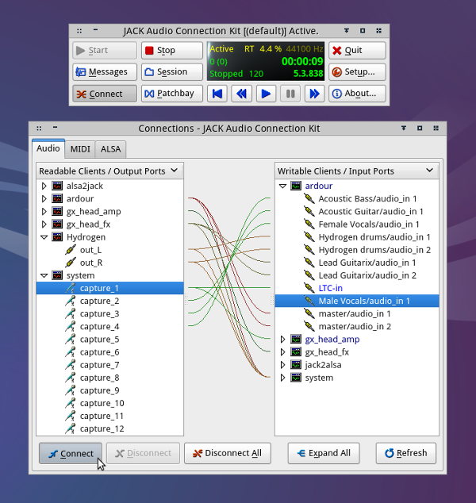
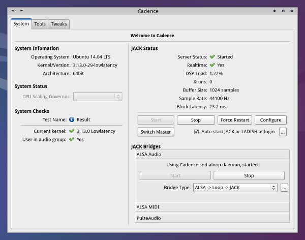
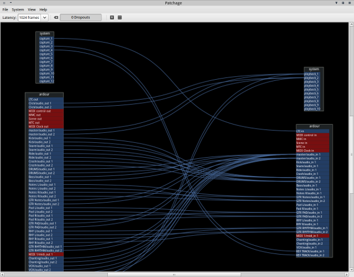
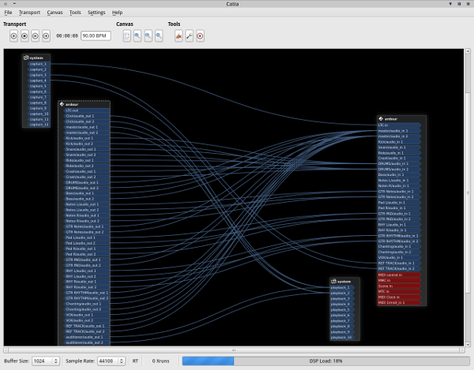

Demystifying JACK – A Beginners Guide to Getting Started with JACK
JACK is the de-facto standard audio server for working with professional audio on Linux. JACK, the name of which is a recursive acronym for ‘JACK Audio Connection Kit’, is a very powerful piece of software. Some new users find it confusing at first. While its settings and functionality are extensive, you only need to know the basics to get started and take advantage of its underlying power.
By the end of this guide, you will hopefully have a sufficient understanding of JACK and its workings so you can set it up, forget about it and get on with your work, utilizing the power that it provides.

For the duration of the guide I will refer to any piece of software that supports JACK as being 'JACK aware'.
What is JACK?
JACK first and foremost is a sound server optimized for the demands of audio production work. There are a few main aspects to what it does -
Settings
JACK controls your audio and MIDI settings. It allows you to choose your audio interface as well as all the important audio settings such as sample rate, buffer size and periods. These settings will be explained in more detail further down.
Performance
Using JACK will allow you to achieve low latencies with both audio and MIDI. This means that if you are recording an instrument into your computer, you can monitor the audio back through your speakers, or headphones, without any perceivable delay.
For a good overview, and visual description of latency, check out 'Latency and Latency-Compensation' from the Ardour manual
Connections and Interconnectivity
This is JACK's strong point. Any inputs and outputs from your audio interface and/or JACK aware programs can arbitrarily be connected together.

JACK not only deals with connections between programs but also within programs. Any JACK aware program uses JACK to manage its inputs and outputs. The beauty of this is that these connections are available for any other JACK aware programs to also connect to. They are not restricted to only being ‘internal’ input and outputs.

Both Ardour and Qtractor utilize JACK to manage audio and MIDI connections
All of this makes JACK a very flexible tool and allows you to interconnect any number of JACK aware programs and have them working together, which brings us onto the next point; sync.
Sync
JACK can be used to sync up multiple programs. This means that if you want to use the MIDI sequencer from one program, and the audio sequencer from another, you can easily keep them in sync with JACK. Both programs will start and stop at the same time. Moving along the timeline in one program will be mirrored in any other programs that are set up to sync with JACK.
An Analogy
An analogy for JACK would be that it is similar to a hardware recording studio. In such a set up you would use cables to connect up various pieces of equipment in any which way or order you choose. You could also sync various pieces of hardware using a common timemaster. JACK does these exact same things between software inside of, and hardware connected to, your computer. It can also act as timemaster for all JACK aware programs so that they remain in sync. Once you open up a JACK aware program, both its audio and MIDI inputs/outputs will be visible to JACK, and in turn, any other JACK aware programs. You can then connect up things exactly how you wish.

You make connections between, and within, programs using JACK in the exact same way you would with real hardware
JACK Aware
Before continuing any further, I will elaborate on JACK aware software to better explain how JACK works. People coming from Windows and Mac will be used to having their DAW managing all of their connections for them. The idea of a DAW using another routing system can be a bit confusing at first. The way to think of this is by creating a parallel. If you are used to your DAW managing all your connections, think of JACK in the same way, except that it is system wide. Any software that is JACK aware can be plugged into this system, similar to how a DAW would add plugins. The difference is that JACK allows you to have precise control of how to route anything you connect up to it. JACK aware software can be anything ranging from DAWS (audio and MIDI sequencers), standalone plugins and even video programs, Xjadeo for example.
JACK does not need to be complicated
As you can tell, JACK is a very capable tool but don't be intimidated by its potential complexity. Using JACK does NOT need to be complicated. Just because it is capable of intricate workflows does not mean it's not also suited to more straightforward set ups. It will do what you want it to do, and is flexible enough to allow you to do more, if you ever need it. You can also happily work in one program and allow JACK to manage all its connections and never leave that program.
JACK Managers
We now know what JACK is and what it's capable of. How do we use it? The first thing to note is that JACK itself is a command line program; however there are various graphical managers for JACK that allow you to easily unlock its power. There are two main types of JACK managers, so you can choose the type that best suits you and your workflow. They can be categorized as -
- JACK set up managers, which allow you to start up JACK with specific settings
- JACK connection managers, which primarily deal with making connections
The various offerings of JACK managers combine these two aspects together to varying degrees. So, why would you choose one over the other? If you are doing all of your work inside of a DAW and you use no external programs, you might be happy with a JACK set up manager to just start up JACK with your selected settings. In such a case, you can make all your software connections from within your DAW of choice so there is not as much a need for an external connection manager.
For people with a more modular recording set up, including multiple effects processors, recording and sequencing programs, a JACK manager more geared towards making connections might be more useful, especially as some modular programs don't have connection managers themselves.
The following are the most popular JACK managers
Qjackctl

Qjackctl is a very powerful, and popular, JACK manager. It allows you to access a large amount of JACK's settings and includes a connection manager, transport controls and even a manager for JACK session, which is a session management program. It presents itself in a small window, allowing you to dig into only the settings you need to access. It can also be minimized to your taskbar so it can get out of your way once you have set it up and running.
Cadence

Cadence is an easy to use tool for setting up and starting JACK. It comes as part of the KXStudio distro and includes JACK bridges, which allow you to play normal desktop sounds, such as flash video, through JACK. Cadence can also start JACK on login, including JACK bridges. If you set it up once, there is very little maintenance thereafter.
Patchage

Patchage is a very good visual connection manager for JACK. It gives you an overview of all your connections. Audio and MIDI ports are color coded so it is easier to identify your connection types. Creating connections is as simple as clicking and dragging from an output port to an input port.
Catia

Catia is another visual connection manager for JACK. It uses a canvas similar to Patchage but has extra features such as access to sample and buffer settings, and JACK transport controls. Cadence can also be easily accessed from Catia by clicking on the spanner button under the tools heading.
Understanding Basic Settings
If you are familiar with audio production on other platforms, you may already be familiar with some of the terminology used in relation to settings. If you are a new user this can be confusing as JACK has a vast array of settings. The main thing to remember here is that most of these settings are not important, at least not for starting off. If you don't know what they are, you probably don't need them just yet. Here is an explanation of the main ones that you need to worry about to get yourself up and running -
Buffer size, sometimes called frames/period
In a nutshell - Smaller buffer sizes produce less monitoring latency.
More in-depth details - A lower setting will make the computer work faster, which will allow for lower latency, but at the expense of increased CPU usage. Higher (larger) settings are more stable but you won't get low monitoring latency with them. If you are looking to achieve low latency monitoring, a setting between 64 – 256 will give you usable results.
Sample Rate
In a nutshell - Higher sample rates result in less latency, for the same buffer setting.
More in-depth details – This settings is dependent on the optimal settings for your audio interface and your own personal preference. Some people prefer to record at higher sample rates, others are happy with 44100 (44.1kHz), which is CD quality. Another common setting is 48000, which some interfaces work better at. The higher you go with this setting, the lower your latency will be but you will push your CPU harder, which may result in xruns (pops and clicks).
Periods/buffer
In a nutshell – If you are using a USB device, you may achieve more stable low latency by setting this to 3. Otherwise, use a setting of 2.
If you wish to achieve low latency settings, it can be a balancing act to find out what works best without pushing your CPU too hard. If you don't need to monitor your audio through your computer with low latency, there is no need to push your computer any more than it needs. You are better off staying with a higher setting and keeping reliability a high priority. If you have the option of hardware monitoring from your interface, use this to monitor your recordings instead.
How do I set up JACK?
This guide assumes that you have a properly configured realtime set up. KXStudio and AVLinux are two Linux distros that provide such an environment out of the box. I will show how to set up JACK settings with both Qjackctl and Cadence.
Qjackctl
Step 1 - Click on the Setup button

Step 2 - Make sure that the realtime option is enabled

Step 3 - Select your audio driver. ALSA should be the default. Leave it at this, unless you are using a firewire device, in which case you would select firewire.
Step 4 - Select your interface from the interface drop down menu
Step 5 - Choose the settings for your interface.
Step 6 - Click OK to apply settings
Note - Do not touch the name field. Some new users like to give their JACK server a name but this can cause JACK not to work as expected. Unless you know what you are doing, leave this alone as it will cause more hassle than it's worth.

Step 7 - Press start and Qjackctl will start JACK with your selected settings

Step 8 - If you need to monitor JACK, the monitor window will provide you with useful information

Cadence
Step 1 - Click on configure button

Step 2 - Make sure that the realtime option is enabled

Step 3 - Make sure the driver tab is selected
Step 4 - Select your audio driver. Select ALSA, unless you are using a firewire device, in which case you would select firewire.
Step 5 - Select your interface from the interface drop down menu
Step 6 - Choose the setting for your interface.
Step 7 - Click OK to apply settings

Step 8 - Press Start and Cadence will start JACK with your selected settings

Step 9 - If you need to monitor JACK, the JACK Status area will provide you with useful information

What Next?
Once you have these settings set up, you can then use any JACK aware programs and they will run with those settings. Some programs will allow you to change your buffer size, so that you can adjust audio latency without having to restart JACK.
So, even though JACK is very powerful, you needn't be intimidated. At its most basic, it is very easy to set up your interface and get started. You can learn more about the power of JACK as you go along but don't get too bogged down starting off when all you want to do is learn to use some new software.
Note - If you are having trouble getting JACK to run, or recognize your interface, make sure your interface is both connected up, and turned on before opening up your JACK manager. If you are still having issues, try rebooting your system while your interface is hooked up.
JACK Sync
Another aspect of JACK that can be useful is JACK sync. Not only can you interconnect programs, you can also make sure that their transports run in sync. I will give a quick overview of how to do this by means of a demonstration that you can follow.
Steps -
- First of all, start running JACK via your preferred JACK manager.
- Next we will start up the programs we wish to sync up, in this case Ardour and Hydrogen. We will need to make sure the setting within these programs are correct first.
Set up for Ardour -
- By default, Ardour is set to be JACK timemaster, which is what we want. This setting can be found by navigating to session > properties and going to the timecode tab. We will leave this enabled for now though.
- Next, we click on the 'Internal' button on Ardour's toolbar. This will change to JACK, meaning that JACK will now follow Ardour as timemaster.

Steps for Hydrogen -
- Navigate to tools > preferences. In the Audio System tab, make sure Jack is chosen as the audio driver and restart Hydrogen.
- Now you will see two timemaster buttons showing up in the toolbar. Make sure that J.trans (Jack transport) is enabled. This means that it will follow JACK transport, which is now being controlled by Ardour.

Now both programs will be in sync when you roll their transports. Additionally, as Ardour is timemaster, you can change the tempo in Ardour and this will be reflected in Hydrogen, or any other slaved program.

Hydrogen and Ardour synced together. Note that the time and tempo read outs are synced
The fact that JACK manages audio and MIDI ports, as well as allowing any programs using them to sync up makes it a very powerful tool. This enables very modular set ups to be created using JACK. For anyone interested in modular set ups, I would highly recommend you look into session management, particularly Non Session Manager, to explore the possibilities of managing modular set ups with these tools.
Making Connections
Let's create a recording scenario to demonstrate how to make connections using JACK. Here is the scenario -
I will be using Ardour to record the following instruments -
| INSTRUMENTS AND INPUTS | |
|---|---|
| Male Vocals | Input 1 |
| Female Vocals | Input 2 |
| Acoustic Guitar | Input 3 |
| Acoustic Bass | Input 4 |
| Lead Guitar | Running through virtual guitar amp, Guitarix |
| Percussion | Hydrogen drum machine synced up |
| Piano | MIDI keyboard plugged into MIDI input with virtual piano plugin on track |
I will use the built in connection manager in Ardour to make these connections, but the logic is the same whichever connection manager you use -
Here is my mixer window set up in Ardour. Out of shot I also have Guitarix and Hydrogen started up. Note the highlighted row. All connections are already made, including connections with Guitarix and Hydrogen.

To make these connections in Ardour, left click on the input buttons shown in the highlighted row. This will show up a window from which you can select your input. In this case I wanted to route the second input from my audio interface into the second track (female vocals), so I select capture 2 by ticking in its box. I repeat the same steps for each other track until I have my connections set up how I want them.

Something to note here is that all these connections made will show up in any other JACK aware programs, for example, if you look at the connections window in Guitarix, you will also see the connections there that I made from within Ardour. This is because it's not the programs that make the connections. They use JACK to manage the connections and tell it what to do. Remember, JACK is your routing system and these programs are only using it.
The following is a complete overview of all connections broken down so they are easy to understand. This is a screenshot of Patchage. Note the color code, audio ports are in blue and MIDI ports are in red.

Click on image for full size
Patchage is the best to illustrate something like this. All connection managers have their positives and negatives. While it is very straight forward for a smaller amount of inputs and outputs, Patchage can get messy and hard to decipher with large amounts of connections. Ardour’s built in matrix connection manager is very good for very large numbers of connects as you can deal with them across categorized tabs. This makes it much neater.

This is a basic session but it demonstrates how audio and MIDI connections work in JACK. It also incorporates JACK applications external to my DAW, one of which is in sync with JACK. Try out all JACK managers/connection managers and see what you find you're most comfortable with and best suits your workflow. They all do the same thing, they just do them in slightly different ways. In the end, you are using the same logic to make the same connections.
Summary
The best thing about JACK is that it doesn't lock you into any single workflow. I showed how to sync programs and make connections between them but if you want to do all your work in one DAW and never leave it, you can do that too. JACK makes no assumptions. It leaves all options open to you, to take advantage of at any time, and makes various workflows possible, monolithic or modular. If you find the tools you like, JACK will make whatever set up you have in mind possible.
Written by Conor Mc Cormack